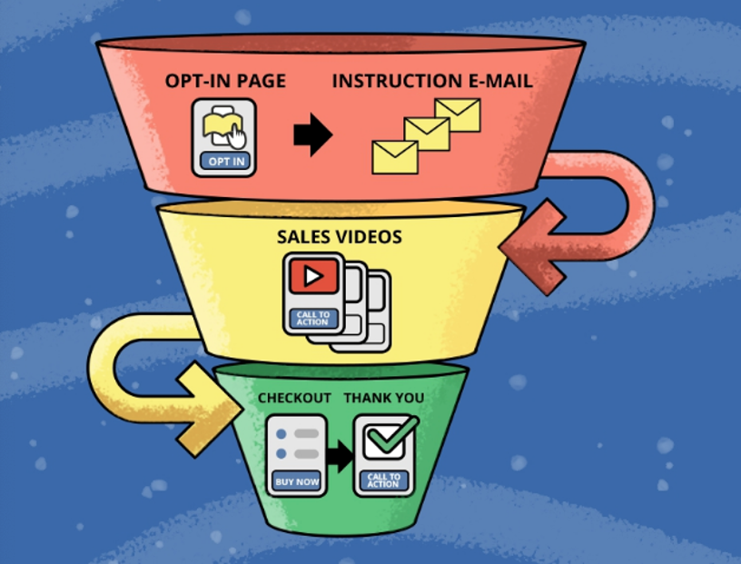

Aqui estão algumas etapas para usar um funil de conversão dentro do Instagram.
- Defina suas metas de conversão: determine o que você deseja que os usuários façam ao chegar ao seu perfil,
como se inscreverem em sua lista de e-mail, comprarem seu produto ou seguirem você.
- Crie uma estratégia de conteúdo: crie uma estratégia de conteúdo que atenda a diferentes etapas do funil de conversão,
desde a conscientização até a decisão de compra.
- Utilize call-to-actions (CTAs): inclua chamadas à ação claras e objetivas em suas postagens, como "Clique aqui para se inscrever" ou "Compre agora".
- Rastreie as conversões: use a funcionalidade de rastreamento de conversões do Instagram ou outras ferramentas de análise para rastrear o progresso
dos usuários ao longo do funil.
- Otimize sua estratégia: use as informações obtidas com o rastreamento de conversões para otimizar sua estratégia de marketing e aumentar a taxa de conversão.
